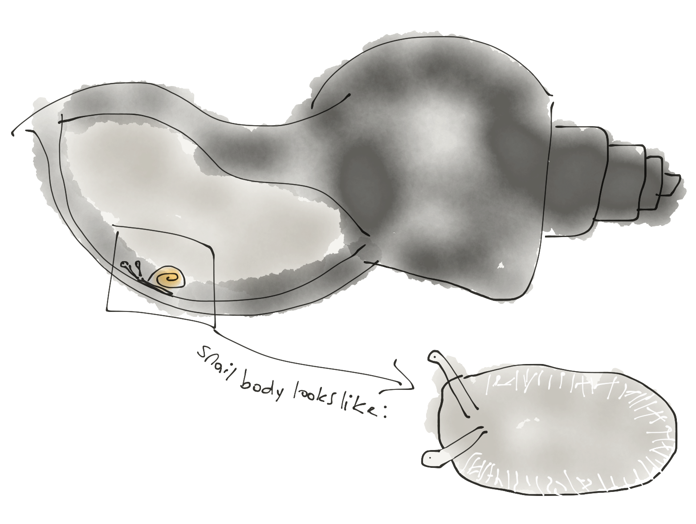

For the past month or two, a bunch of grove snails have been living in a terrarium in my room. My greatest concern about them is that they're going to dry out. My preoccupation with their moisture status stems from the fact that I've primarily spotted wild snails roaming around on cool, wet days, leaves me believing that, like earthworms, they're prone to drying out.
So, I try to keep the snails moist. I spray them and their terrarium with water. I also keep a large shell filled with water in their tank. Here are some snails crawling on the water-shell in their tank (it's sped up 8X).
Recently, I've noticed that sometimes, the snails stay in the watering shell. There are some that basically submerse themselves in the water, flattening themselves against the shell. In this position, their foot takes a very different shape than it does when they're moving. It's more flattened and thin.

When I first saw this, I thought they were absorbing calcium from the shell. This changed when I added a calcium-rich egg shell into their terrarium. I watched them actually eat the shell with their mouths similar the way I've heard and seen them eat leaves. In the video below, you can actually hear a snail eating an egg shell I put in it's tank and you can watch it eat at regular speed.
This led me to believe that they don't necessarily absorb calcium through their skin, rather they eat foods high in calcium. Maybe this isn't always true, obviously I have much more observing to do.
However, what I really want to know is how do they drink? When snails go into the shell and flatten themselve, are they drinking water through their skins? Are they keeping their lung above the water so that they can breathe, or can they hold their breath for long enough that they can submerse their whole selves into the water in the shell? What's happening when they flatten themselves against the side of their watering shell?
I recently read an article about how slugs rehydrate themselves. These researcher dehydrated slugs to 60-70% of their initial body weight and then put them in chambers with moist paper towels. The dehydrated slugs would immediately flatten thsemlves against the wet paper towels for 10-20 minutes and absorb water from them through a process called "contact-rehydration." During this process their upper tentacles, the ones with their eyes on the tips, are half-extended. But when they're fully hydrated and moving around, the researchers note that their fully etended. I imagine it's the slugs eye stalks looking like wilting flowers — although this is obviously the picture I'm painting in my mind.
Different slugs would reabsorb water up until different points of rehydration. The point at which they stopped this drinking behavior, the researchers referred to as the "set-point." These set-points weren't always the same for individual slugs. They also weren't
They wanted to figure out if the slugs were responding to volume or osmolarity when they were dehydrated and initiatied this water-absorbign behavior. It didn't seem to be volume because slugs who were not dehydrated who were injected with saltier water, when put in the chambers with the moist pads, assumed the drinking posture. Whereas slugs who had been injected with the same volume of solution that was the same salinity as their body fluids did not take up the drinking posture of flattening themselves again the moist pad.
How are the slugs and snails absorbing water? This researcher found that the slugs were not using their mouths to drink because when the water was dyed, very little of the dye ended up in the slugs stomachs but rather went straight to their body fluids.
This same researcher, D.J. Prior, did some more eperiements to find out how contact rehydration in slugs works — how water is absorbed through the skin.
He combined with the water, an extra-cellular marker called inulin and found that this was being absorped with the water, which implied that the water was not travelling through the slug's cells but rather travelling between them.
He found that slugs were absorbing water at a rate faster than he'd expect solely based on what would happen via osmosis. This made him think that the slugs were actually changing their permeability. He took beautiful photgraphs of a slugs flot cells with an electron-microscope and showed how when they're in the process of contact rehydration, the spaces between their cells grows. When they're fully hydrated this space can hardly be seen at all.
These gaps between cells may widen when slugs take the contact-rehydration posture. This idea is supported by the fact that the slugs don't really start absorbing water within the first 50-60s initiating contact rehydration. Maybe this is the time it takes for slugs to widen these extracellular gaps and begin absorbing water.
I still don't understand the connection between the flat posture I saw, how that may iniate the opening of spaces between cells, how that opening allows water to flow in, how those openings change over time, when the slug or snail decides to stop, if they're breathing while their drinking, and many more questions.
I also still don't know what's happening in this footage (below). I initially thought that this was a snail drinking water and maybe it is, but I doubt it now. Or maybe it's a snail "just" bumping into droplets, or perhaps it's a snail playing in puddles.
snail and water droplets from Molly Josephs on Vimeo.